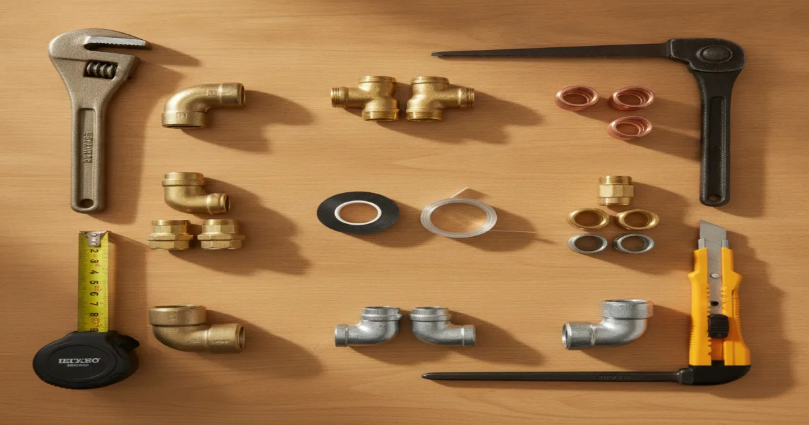

Our Services
Whatever's going on with your plumbing, there's a good chance we've handled it before. Here's a breakdown of what we do for homeowners and small commercial properties across Armonk and Westchester County.
- Licensed & Insured
- Same-Day Service Available
- Upfront Pricing
- 15+ Years of Experience

Pete's Plumbing covers the plumbing needs of homes and small businesses throughout Armonk and the surrounding towns. That includes everyday repairs, drain and sewer work, gas line service, septic-connected plumbing, and the plumbing side of bathroom and kitchen remodels. Every job starts with a clear look at what's actually causing the problem, followed by an upfront price before we touch anything. Use the categories below to find the service that matches what's happening at your property.
Drainage Service
Slow drains, sewer backups, and stubborn clogs are some of the most common calls we get from Armonk-area homeowners. Our drain and sewer service overview walks through how we handle all of it, from a first-time clog to a full sewer line diagnosis.
Drain Cleaning
Slow or smelly drains? Pete's Plumbing clears clogs fast with upfront pricing and same-day appointments across Armonk and Westchester County.
Learn MoreSewer Line Repair
Backups, slow drains, or soggy spots in the yard can point to a damaged sewer line. We diagnose it clearly before recommending any repair.
Learn MoreHydro Jetting
High-pressure hydro jetting clears grease, scale, and buildup that snaking alone can't reach — a deeper clean for stubborn pipes.
Learn MoreClogged Drain Repair
A clogged drain that keeps coming back usually means something deeper. We diagnose and fix the real cause, not just the symptom.
Learn MoreDrain Snaking & Rooter Service
When a plunger won't cut it, our rooter service clears stubborn blockages and root intrusion from Armonk-area drain lines.
Learn MoreSewer & Drain Camera Inspection
See what's really going on inside your pipes. Our camera inspections pinpoint blockages, cracks, and root intrusion without guesswork.
Learn MoreGrease Trap Cleaning
Commercial kitchens rely on a clean grease trap to keep drains flowing. We service Armonk-area restaurants and small commercial properties.
Learn MoreGasfitter
Gas work isn't something to guess at. Our licensed gasfitter services overview explains exactly how our technicians handle gas line and gas appliance work safely.
Gas Line Repair
Smell gas or notice a pressure drop? Our licensed technicians diagnose and repair gas line issues safely, with upfront pricing.
Learn MoreGas Water Heater Installation
Replacing or installing a gas water heater? We handle the gas connection and plumbing safely, with clear pricing before we start.
Learn MoreSeptic Services
Homes on septic systems need a plumber who understands how the two systems work together. Our septic-connected plumbing overview covers the plumbing side of septic issues.
Septic Tank Service
Noticing slow drains or backups in a septic-connected home? We handle the plumbing side of septic tank problems, explained clearly.
Learn MoreBathroom & Kitchen Remodeling
Planning a renovation? Our remodeling plumbing overview covers the plumbing side of your project, from moving supply lines to rerouting drains.
Bathroom Plumbing Remodeling
Moving a toilet, adding a shower, or repiping for a bathroom remodel — we handle the plumbing work behind your renovation.
Learn MoreKitchen Plumbing Remodeling
Relocating a sink, adding a dishwasher line, or repiping for a kitchen remodel — we handle the plumbing work your renovation needs.
Learn MorePlumbing
General plumbing is still the biggest part of what we do day to day. Our full range of plumbing services includes everyday repairs and installations in every room of the house, grouped below so you can find what you need.
Emergency, Leak & Pipe Repair
When something can't wait, or you suspect a hidden problem, this is where to look.
Emergency Plumbing Repair
A plumbing emergency can't wait. We offer same-day and emergency response across Armonk and Westchester County.
Learn MoreBurst Pipe Repair
A burst pipe is a true emergency. We respond quickly to stop the water and repair the damage before it spreads.
Learn MoreFrozen Pipe Repair
Cold snaps can freeze and crack exposed pipes. We thaw and repair them fast to prevent further damage.
Learn MoreSlab Leak Repair
A leak under your foundation is serious. We locate it precisely and repair it with minimal disruption to your home.
Learn MoreLeak Detection
A rising water bill or damp spot can mean a hidden leak. We find the source before it causes real damage to your home.
Learn MoreWater Leak Sensor Installation
Catch a leak before it becomes a disaster. We install leak sensors that alert you the moment water shows up where it shouldn't.
Learn MorePipe Repair
From small leaks to corroded joints, we repair damaged pipes so your home's plumbing works the way it should.
Learn MorePipe Replacement
Old or failing pipes causing recurring problems? We replace them with durable materials built for Armonk's climate.
Learn MoreWater Line Replacement
An aging or damaged water line puts your whole home's water supply at risk. We replace it before a small issue becomes a big one.
Learn MoreWater Main Repair
A damaged water main affects your entire home. We diagnose and repair it quickly to restore full water service.
Learn MoreLow Water Pressure Repair
Weak water pressure has a real cause — from buildup to a hidden leak. We find it and fix it, not just mask it.
Learn MoreWater Heating, Softening & Filtration
Everything related to hot water, water quality, and the equipment behind both.
Water Heater Installation
New water heater or replacing an old one? We help Armonk homeowners choose the right size and install it correctly, with upfront pricing.
Learn MoreTankless Water Heater Installation
Considering a tankless water heater? We walk you through the tradeoffs and install it right, whether gas or electric.
Learn MoreHot Water System Repair
No hot water or inconsistent temperatures? We diagnose the actual cause before recommending a repair.
Learn MoreBoiler Installation
Replacing an aging boiler? We help you choose the right unit for your home and install it correctly.
Learn MoreWater Softener Installation
Hard water can damage pipes and appliances over time. We install a water softener sized right for your Armonk home.
Learn MoreWater Filtration System Installation
Want cleaner water straight from the tap? We install filtration systems suited to your home's actual water quality.
Learn MoreFixture, Appliance & Bathroom/Kitchen Installs
The fixtures and appliances homeowners touch every day.
Toilet Installation
Upgrading to a new or more efficient toilet? We install it cleanly and make sure it's sealed and working right the first time.
Learn MoreToilet Repair
Running, leaking, or clogged toilet? We diagnose the actual problem before recommending a repair or replacement.
Learn MoreFaucet Installation
Upgrading a kitchen or bathroom faucet? We install it cleanly, with no leaks and no surprises on the bill.
Learn MoreOutdoor Faucet Repair
A leaking or frozen outdoor spigot can waste water and damage your home's exterior. We repair it before winter makes it worse.
Learn MoreSink Installation
New kitchen or bathroom sink? We install it with clean connections and no leaks under the counter.
Learn MoreBathtub Installation
New tub or replacing an old one? We handle the plumbing connections so it's watertight and ready to use.
Learn MoreShower Installation
Installing a new shower or converting a tub? We handle the plumbing so the finished result works as good as it looks.
Learn MoreShower Valve Replacement
Inconsistent water temperature or a stuck shower valve? We replace it so your shower is reliable again.
Learn MoreFixture Replacement
Worn-out fixtures waste water and look dated. We replace them cleanly, matching your home's existing plumbing.
Learn MoreGarbage Disposal Repair
Jammed, leaking, or dead garbage disposal? We repair or replace it so your kitchen sink is back in working order fast.
Learn MoreAppliance Hook-Up
New dishwasher, washing machine, or fridge with a water line? We connect it correctly so it works from day one.
Learn MoreUrinal Installation
Installing a urinal for a commercial property? We handle the plumbing connections cleanly and to code.
Learn MoreSpecialty, Maintenance & Commercial
Work that doesn't fit neatly into a single category, including commercial and compliance needs.
Sump Pump Installation
Protect your Armonk basement from flooding with a properly sized, correctly installed sump pump.
Learn MoreRainwater Tank Installation
Want to collect and reuse rainwater at your Armonk property? We install a tank system that fits your setup.
Learn MoreLaundry Room Plumbing
Setting up or fixing laundry room plumbing? We handle the supply and drain lines so your washer runs without leaks.
Learn MoreBackflow Testing
Required annual backflow testing, done right and documented, to keep your property's water supply safe and compliant.
Learn MorePlumbing Inspection
Buying a home or just want peace of mind? A full plumbing inspection catches small issues before they become expensive ones.
Learn MorePlumbing Maintenance
Regular plumbing maintenance catches small problems early. We check the things homeowners usually don't think to check.
Learn MoreCommercial Plumbing Services
We support small commercial properties in the Armonk area with the same upfront pricing and clear communication as our residential work.
Learn MoreRepiping
Recurring leaks or corrosion across multiple pipes usually means it's time to repipe. We walk you through the process clearly.
Learn More